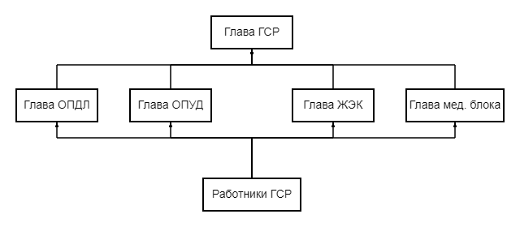
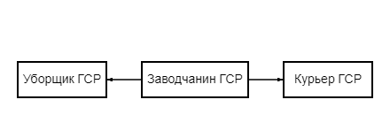
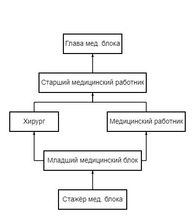
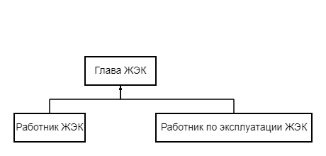
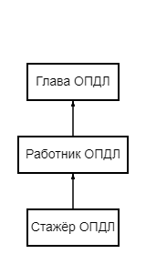
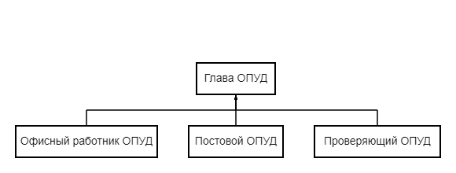

ГСР
Что такое ГСР?
ГСР это аббревиатура, которая означает - Гражданский Союз Рабочих. В 2007 году Альянс создаёт ГСР. Союз призван объединить в себе сразу несколько сфер и структур: социально-трудовую, здравоохранение, техническую, производственную, СМИ и другие. Прямым её руководителем оказывается Глава ГСР.
У ГСР есть данные отделы:
- Уборщик ГСР
- Курьер ГСР
- Заводчанин ГСР
- Стажёр мед. блока ГСР
- Младший медицинский работник ГСР
- Медицинский работник ГСР
- Старший медицинский работник ГСР
- Хирург мед.блока ГСР
- Глава мед. блока ГСР
- Работник ЖЭК ГСР
- Работник по эксплуатации ЖЭК ГСР
- Глава ЖЭК ГСР
- Стажёр ОПДЛ ГСР
- Работник ОПДЛ ГСР
- Глава ОПДЛ ГСР
- Офисный работник ОПУД ГСР
- Проверяющий ОПУД ГСР
- Постовой ОПУД ГСР
- Глава ОПДЛ ГСР
Рабочие
Медицинский блок
ЖЭК(Жилищно-Эксплутационный Комитет)
ОПДЛ(Отдел По Делам Лояльности)
ОПУД(Отдел По Управлению Документами)
Иерархия ГСР:

Иерархия отделов:
-
Иерархия рабочих

-
Иерархия мед. блока

-
Иерархия ЖЭК

-
Иерархия ОПДЛ

-
Иерархия ОПУД
